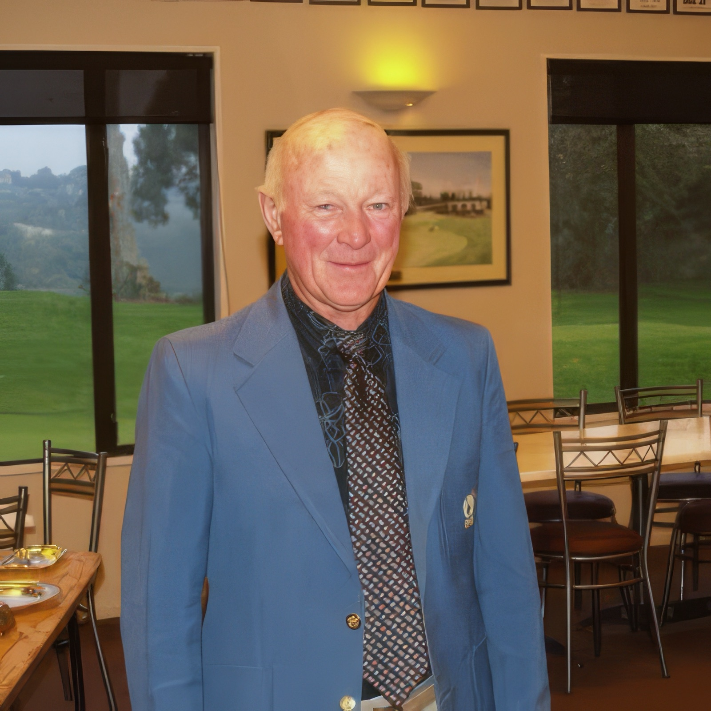

PEOPLE & CLUB LIFE
Keith Dawkins
Life Member and long-time club stalwart.

Photograph and identification added 11 November 2026. Photograph date not supplied.


Photograph and identification added 11 November 2026. Photograph date not supplied.

Photograph and identification added 11 November 2026. Photograph date not supplied.
Record source: Photograph and identification added 11 November 2026.